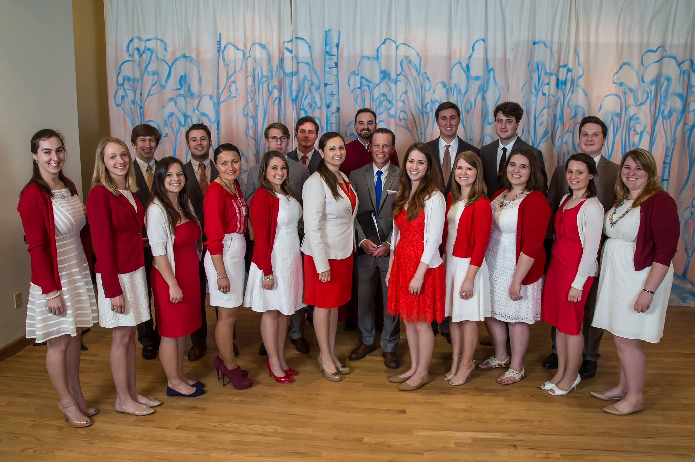

YFNY | презентация молодежных проектов
В этом году мы планируем организовать наш третий Пасхальный Музыкальный Концерт в столице штата Нью-Йорк, Albany.
#youthpv
В этом году мы планируем организовать наш третий Пасхальный Музыкальный Концерт в столице штата Нью-Йорк, Albany. Задачей концерта является не только культурное образование русской молодежи, проживающий в Америке, но и сбор средств для сирот в России.
Ежегодно, начиная с 2014, Молодежная Ассоциация Князя Владимира устраивает Апрельские Музыкальные Концерты с целью культурного просвещения, продолжения русских традиции в Америке, а также привлечения молодежи для совместной работы в сфере благотворительности и социального служения. Наш молодежный хор состоит из группы 20 человек, которые активно принимают участие в различных культурных проектах как в Америке, так и зарубежном. Так, например, этой весной нам удалось организовать музыкальный тур молодежного хора по городам Украины, включая Киев. Главными целями нашей поездки являлись не только показательные концерты, но и благотворительное служение. Так в детский приют были переданы пожертвования в размере 10,000USD. Нам удалось собрать такую сумму благодаря проданным билетам с Апрельских концертов, а также с помощью различных благотворительных мероприятий, проходивших в течении года. Акция “Школьная копилка” в городах Нью- Йорка, Нью-Джерси и Сан Франциска помогла нам не только собрать материальные средства для сирот в Украине, но и способствовала привлечению детей в возрасте от 6 до 15 лет в таком важном деле. Идея этой акции заключалась в том, что каждый ребенок мог принести свои накопленные монеты и пожертвовать их детям, которые не имеют семью. Данная акция помогла нам не объединить русских людей из различных городов Америке, но и прежде всего показала, как не равнодушны наши дети в делах благотворительности.
. В этом году мы планируем организовать наш третий Пасхальный Музыкальный Концерт в столице штата Нью-Йорк, Albany. Задачей концерта является не только культурное образование русской молодежи, проживающий в Америке, но и сбор средств для сирот в России.
К сожалению, для того что бы нам иметь возможность помогать другим, зачастую самим также нужна материальная поддержка. В этом году мы планируем организовать наш третий Пасхальный Музыкальный Концерт в столице штата Нью-Йорк, Albany. Задачей концерта является не только культурное образование русской молодежи, проживающий в Америке, но и сбор средств для сирот в России. Для этого нам необходима материальная помощь в размере $2,100, что включает в себя Ночлег - $1,200 транспорт - $500 питание - $ 400
Мы приглашает каждого из Вас принять участия в этом культурном мероприятии, которое не только будет приятным вечером для Вас и Вашей семьи, но и даст Вам возможность помочь детям без семей в России.
Тел.: (646)320-7382Эл. почта: youthpv@gmail.com